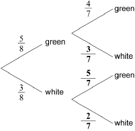

* This question is from an exam for a previous syllabus, and may contain minor differences in marking or structure.
correct probabilities
 A1A1A1 N3
Note: Award A1 for each correct bold answer.
[3 marks]
multiplying along branches (M1)
eg
adding probabilities of correct mutually exclusive paths (A1)
eg
A1 N2
[3 marks]